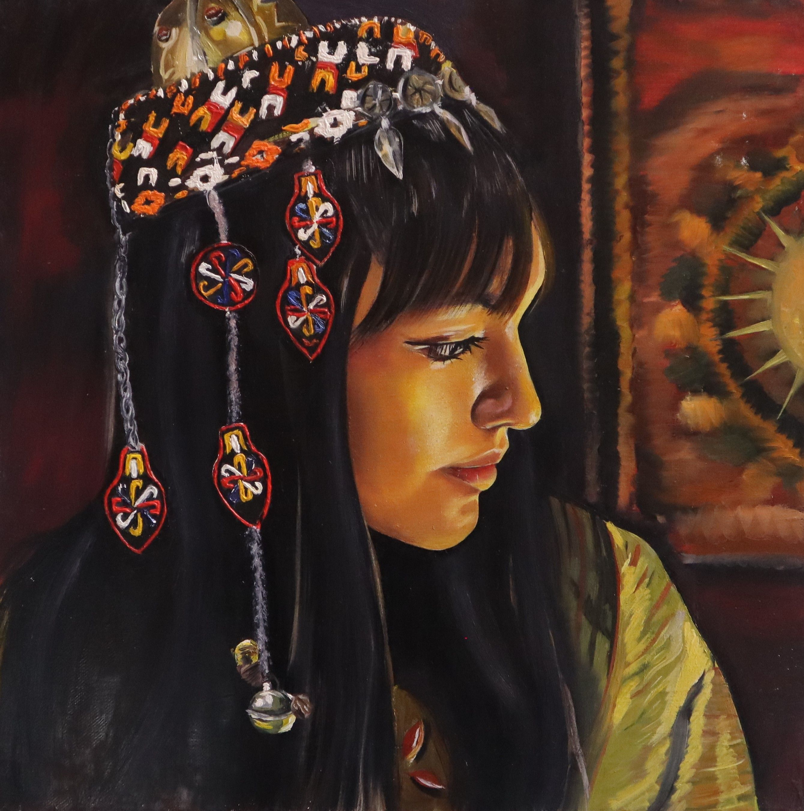

Turkmen Girl
This portrait explores cultural identity through light, texture, and color. The figure is shown in profile, allowing attention to focus on the intricate traditional Turkmen headdress and jewelry. Warm tones and controlled highlights emphasize the richness of the textiles and the quiet strength of the subject. The composition balances realism with painterly brushwork, creating depth while preserving softness in the facial features. The work reflects pride, heritage, and the intimate connection between identity and tradition.